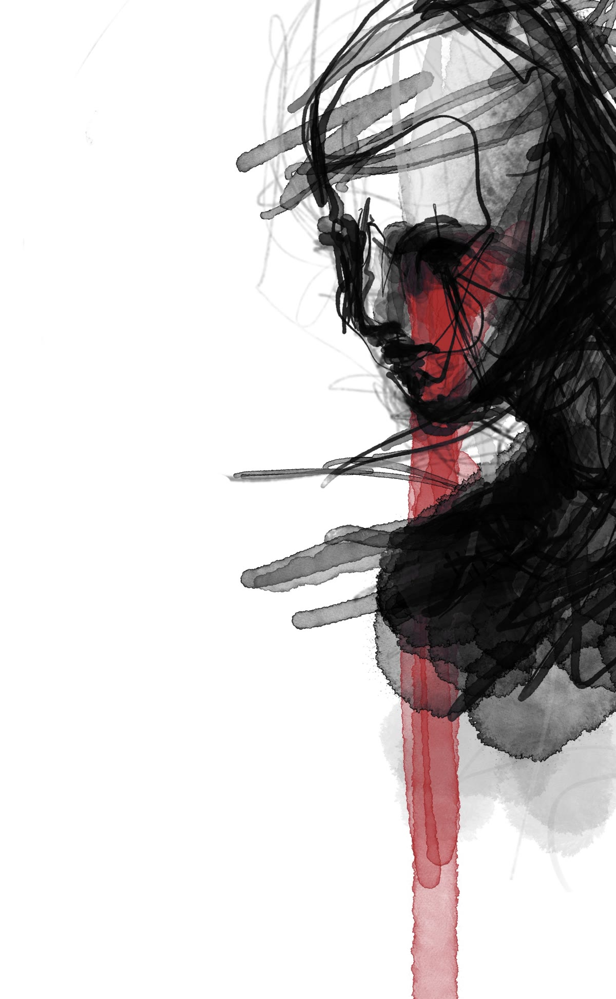

Luke WTF
Tätowierer und Zeichner. Bluthandwerk, Köln-Ehrenfeld — seit 2012. Arbeiten auf Haut und auf Papier.

Dieselbe Hand, dieselbe Linie — nur der Grund wechselt.
Handschrift
Ob Haut oder Papier — die Hand ist dieselbe. Jede Arbeit fängt als Zeichnung an: Linienbündel, Waschungen, Korrekturen, bis die Form steht. Auf Papier bleibt sie stehen. Auf Haut wandert sie mit, dehnt sich, altert, heilt. Beides sind Originale, beides gebe ich aus der Hand.
Deshalb trennt diese Seite nicht nach Stilen, sondern nach Trägern. Was auf Papier entsteht, ist keine Vorstufe fürs Tätowieren, und was auf Haut entsteht, ist keine angewandte Kunst zweiter Klasse. Es ist ein Werkverzeichnis mit zwei Spalten — mehr braucht es nicht.
Flash
Fertige Entwürfe zum Aussuchen. Jedes Blatt wird genau einmal gestochen — was vergeben ist, ist vergeben.
Ablauf
Under appointment only. Keine Walk-ins. So läuft eine Anfrage:
- Du schreibst mir — über das Formular, per DM an @lukewtf oder telefonisch im Studio. Motividee, Träger, Stelle, ungefähre Größe.
- Ich melde mich mit einer Einschätzung: ob es zu mir passt, wie groß es sinnvoll ist, wie viele Sitzungen es braucht. In der Regel innerhalb einer Woche.
- Wir besprechen den Entwurf. Gezeichnet wird für dich, nicht aus dem Ordner.
- Sitzung im Atelier, Vogelsangerstraße 84. Nachsorge besprechen wir vor Ort.
Bluthandwerk
Ein Tätowier-Kollektiv in Köln-Ehrenfeld. Privates Atelier, Termine nur nach Vereinbarung — wer kommt, wird erwartet. Fünf Leute, ein Laden:
- Luke WTFdiese Seite
- Kiya NoirProfil folgt
- Jonas DreyerProfil folgt
- Kate VelvetProfil folgt
- Stefan GeptingProfil folgt